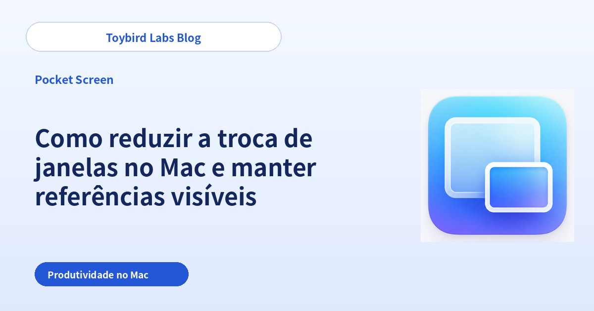
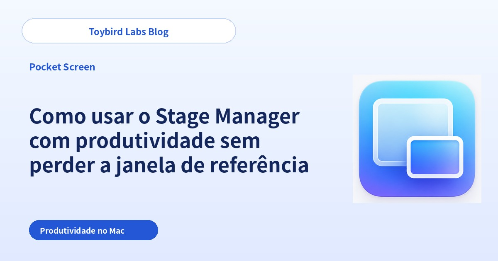
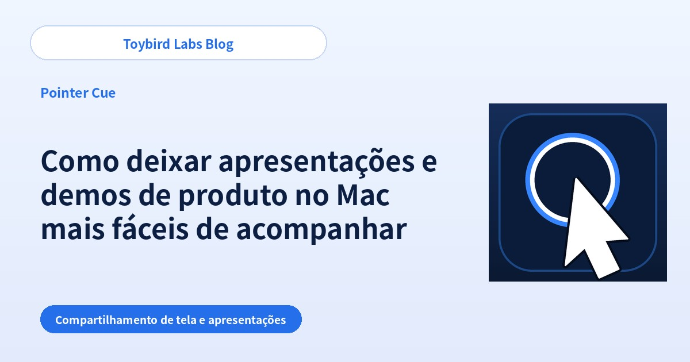
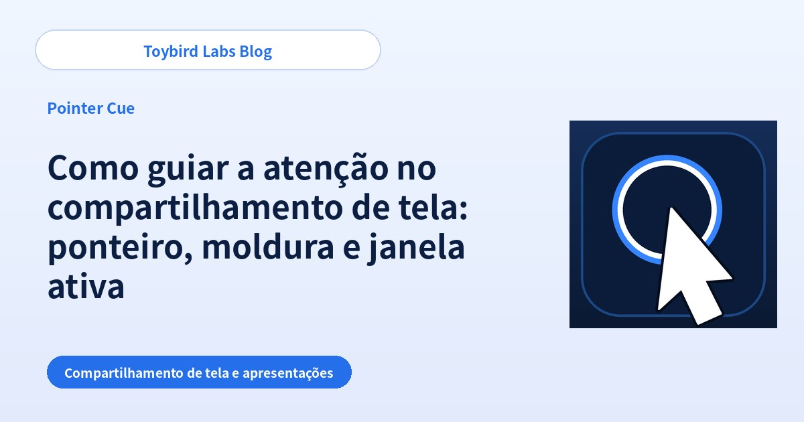

Toybird Labs Blog
Ideias práticas para trabalhar e aprender melhor
Guias passo a passo para usar IA generativa no trabalho, além de dicas práticas sobre aplicativos para Mac, Windows e ferramentas de estudo.
Todos os artigos
Comece por aqui

Como usar o ChatGPT no trabalho: 5 dicas e 10 exemplos de prompts
Aprenda a usar o ChatGPT no trabalho com cinco hábitos práticos, dois exemplos detalhados e dez tarefas que você pode testar agora.
Guias práticos por tarefa
Como escrever um e-mail de recusa educado com o ChatGPT
Crie com o ChatGPT um e-mail de recusa claro e profissional ao informar a solicitação, a limitação, uma alternativa e o próximo passo.

Como transformar anotações de reunião em tarefas com o ChatGPT
Use o ChatGPT para separar decisões, tarefas, responsáveis, prazos e perguntas pendentes a partir de anotações de reunião desorganizadas.

Resposta do ChatGPT fora do esperado: 6 causas e como corrigir
Entenda por que uma resposta do ChatGPT ficou longa demais, com tom inadequado ou fatos sem fonte, e corrija com instruções específicas.

Como escrever respostas para clientes com o ChatGPT
Crie e-mails de atendimento precisos com o ChatGPT separando a mensagem do cliente, os fatos confirmados, o que ainda é desconhecido e a próxima ação.

Como fazer o ChatGPT pedir as informações que faltam
Use prompts que fazem o ChatGPT pedir informações faltantes uma pergunta por vez, em uma lista curta ou com opções.

Como resumir documentos longos com o ChatGPT para o trabalho
Resuma documentos longos com o ChatGPT definindo leitor, decisão, tamanho, evidências necessárias e tratamento de informações ausentes.

Como adaptar um texto para públicos diferentes com o ChatGPT
Use o ChatGPT para apresentar os mesmos fatos a clientes, liderança, equipes internas ou iniciantes sem mudar o significado.

Como comparar opções e criar uma tabela de decisão com o ChatGPT
Compare produtos ou serviços com o ChatGPT definindo critérios, prioridades, dados ausentes e regras para recomendações.

Como praticar reuniões de vendas com role-play no ChatGPT
Configure um role-play comercial realista com perfil do cliente, uma pergunta por vez, objeções e feedback estruturado.
Aumentar a produtividade em uma única tela do MacBook

Como aumentar a produtividade em uma única tela do MacBook
Aprenda a trabalhar com mais produtividade em uma única tela do MacBook mantendo PDF, página da web ou chat visíveis. Compare mosaico, Split View, Stage Manager e janela flutuante.

Como reduzir a troca de janelas no Mac e manter referências visíveis
Reduza trocas repetidas de janela no Mac mantendo PDF, página da web, chat ou painel visíveis. Compare os layouts do sistema com uma referência sempre visível.

Como usar o Stage Manager com produtividade sem perder a janela de referência
Use o Stage Manager no Mac sem perder repetidamente PDF, página da web ou chat. Compare o mesmo grupo com uma referência flutuante persistente entre conjuntos.
Deixar reuniões remotas e demos de produto mais claras

Como tornar o compartilhamento de tela mais fácil de acompanhar destacando o ponteiro
Ajude o público a acompanhar o ponteiro no Zoom, Teams ou Google Meet. Compare ajustes do sistema, ritmo e anel sob demanda.

Como deixar apresentações e demos de produto no Mac mais fáceis de acompanhar
Deixe apresentações e demos no Mac mais fáceis de acompanhar mostrando qual janela importa. Compare limpeza, compartilhamento de uma janela e foco na ativa.

Como guiar a atenção no compartilhamento de tela: ponteiro, moldura e janela ativa
Deixe a orientação mais clara: ponteiro para um controle, moldura para uma área e foco da janela para o app atual.